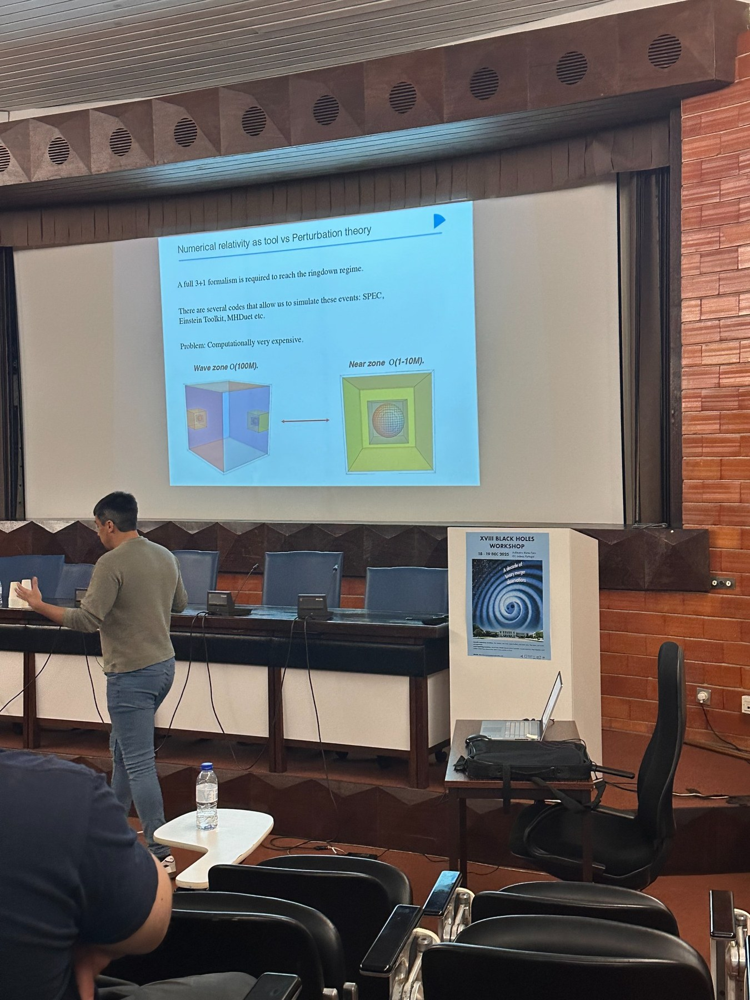

Xisco Jiménez Forteza and Alejandro Svyatkovskyy Kholyavka represented the Perturbation Theory Group at the XVIII Black Holes Workshop, where they presented recent results on black-hole ringdown using numerical relativity and numerical linear perturbation theory.

The workshop was held on 18 and 19 December 2025 at the Anfiteatro Abreu Faro of Instituto Superior Técnico. Its eighteenth edition brought together 106 registered participants working across the physical and mathematical aspects of black holes, including general relativity, gravitational-wave physics, astrophysics, semiclassical gravity and quantum gravity.
The meeting also marked ten years since the first direct detection of gravitational waves by the LIGO detectors, providing a timely setting for discussions on the current status and future prospects of black-hole physics.
Two talks on black-hole ringdown
Both group members contributed to the ringdown session held on Friday, 19 December. Their talks addressed complementary approaches to understanding the post-merger response of black holes.
Xisco Jiménez Forteza
“Understanding the black hole ring-down using numerical relativity”
Alejandro Svyatkovskyy Kholyavka
“Exploring Amplitude and Tail Properties in the Ringdown Using Numerical Linear Perturbation Theory”
Xisco Jiménez Forteza discussed how numerical-relativity simulations can be used to investigate the post-merger dynamics of binary black holes and the ringdown emitted by the remnant. Alejandro Svyatkovskyy Kholyavka presented work on quasinormal-mode excitation amplitudes and late-time tails, showing how numerical linear perturbation theory can be used to isolate and characterise the different components of the black-hole response.

A meeting across the different aspects of black-hole physics
The Black Holes Workshop series is designed to stimulate exchange between researchers approaching black holes from classical, quantum, mathematical and observational perspectives. The Lisbon meeting provided the group with an opportunity to present its current work, discuss methodological developments with specialists in the field and explore possible directions for future collaborations.